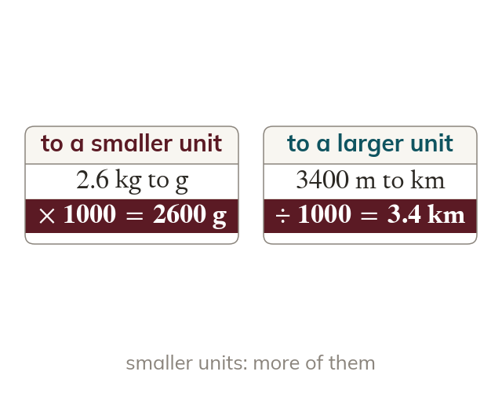

Converting between metric units
Metric units convert by powers of ten, like kg. Converting to a smaller unit multiplies. Converting to a larger unit divides.
Metric units convert by powers of ten - mm cm, cm m, km, ml l, kg, kg t. Converting to a smaller unit multiplies; converting to a larger unit divides.